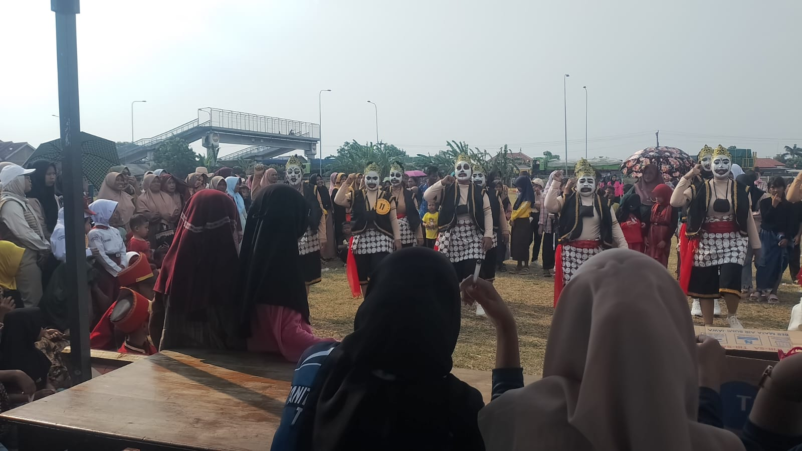

10 Agustus 2025 • 👤 Admin
Dalam rangka memeriahkan HUT RI ke-80, Desa Tegongan menggelar lomba gerak jalan pada 10 Agustus 2025. Acara ini diikuti oleh berbagai kelompok masyarakat, mulai dari anak-anak, remaja, hingga orang tua.
Peserta menempuh rute yang telah ditentukan sambil menampilkan yel-yel kreatif dan kekompakan barisan. Antusiasme masyarakat sangat tinggi, terlihat dari jumlah peserta dan dukungan warga sepanjang jalan.
Lomba gerak jalan ini diharapkan dapat menumbuhkan semangat kebersamaan dan cinta tanah air di kalangan warga Desa Tegongan.